Product Inquiry (Sales)
Tel : +82-31-899-4503 / 4504 / 4507
Fax : +82-31-899-4509
CameraLink Camera Manual
Sony CMOS Polarized Sensor USER MANUAL
MC-A500P-163 / MC-A121P-67
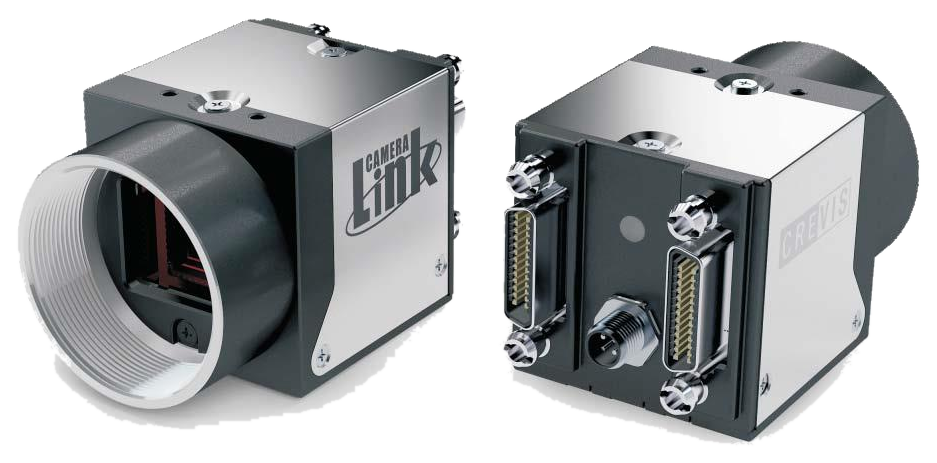
| Item | Required Version |
|---|---|
| GenICam(GenApi) | Ver_2.3.1 |
| SFNC | Ver_2.0.0 |
| GenICam_CLProtocol_Standard | Ver_1.1 |
| Spec. | MC-A500P-163 | MC-A121P-67 |
|---|---|---|
| Sensor | 5M IMX250MZR |
12M IMX253MZR |
| Sensor Format | 2/3” | 1.1” |
| Pixel Size(um) | 3.45 x 3.45 | 3.45 x 3.45 |
| Active Pixels (10Tap) | 2464 x 2056 (2440 x 2056) |
4096 x 3000 (4080 x 3000) |
| C/L Pixel Freq. | 85MHz | 85MHz |
| C/L Tap | 10Tap / 8Tap / 4Tap / 3Tap / 2Tap / 1Tap | 10Tap / 8Tap / 4Tap / 3Tap / 2Tap / 1Tap |
| Frame Rate (Max)* 10tap | 163fps | 67fps |
| Exposure Time | Min. 3.7us(1H) + 13.73us | Min. 6.06us(1H) + 14.26us |
| Scanning Method | Full / ROI(Horizontal+Vertical) / Reverse(X,Y,All) | Full / ROI(Horizontal+Vertical) / Reverse(X,Y,All) |
| Sync. System | Internal(Freerun), External(CC1 ~ CC4), Software trigger via PC | Internal(Freerun), External(CC1 ~ CC4), Software trigger via PC |
| Trigger Mode | Timed, Trigger Width | Timed, Trigger Width |
| Shutter | Global Shutter | Global Shutter |
| Gain Abs | Analog : 0dB ~ 24dB (1x ~ 15.8x) Digital : 0dB ~ 18dB (1x ~ 8x) |
Analog : 0dB ~ 24dB (1x ~ 15.8x) Digital : 0dB ~ 18dB (1x ~ 8x) |
| Black Level (Analog/Digital) | Analog : 0 ~ 1023(10bit) / Digital : 0 ~ 1023(10bit) | Analog : 0 ~ 1023(10bit) / Digital : 0 ~ 1023(10bit) |
| Gamma | Adjustable LUT (10bit to 10bit) | Adjustable LUT (10bit to 10bit) |
| Video I/F | CameraLink Full (SDR x 2) | CameraLink Full (SDR x 2) |
| Pixel Format | Mono8/10, Bayer8/10, RGB8 Degree, RGB8 Polarization | Mono8/10, Bayer8/10, RGB8 Degree, RGB8 Polarization |
| Communication | RS232 via CameraLink connector | RS232 via CameraLink connector |
| Minimum Illumination | 1.0 lx, F1.4, Gain MAX, without IR cut filter | 1.0 lx, F1.4, Gain MAX, without IR cut filter |
| SNR | 43.85dB | 46.64dB |
| Function Control | GainAuto, ExposureAuto, Acquisition Frame Rate(Adjustable), Shading Correction(FFC), Noise Reduction | GainAuto, ExposureAuto, Acquisition Frame Rate(Adjustable), Shading Correction(FFC), Noise Reduction |
| Lens mount | C mount | C mount |
| Optical accuracy | Optical center ≤ ± 0.1 mm | Optical center ≤ ± 0.1 mm |
| Power Supply | DC(12V ~ 24V ± 10%) or PoCL | DC(12V ~ 24V ± 10%) or PoCL |
| Consumption (DC/PoCL) | < 3.2W | < 3.6W |
| Weight | 47g | 47g |
| Dimension | 29 x 29 x 29 mm (Without mount, Connector) | 29 x 29 x 29 mm (Without mount, Connector) |
| Operating / Storage | 0℃ ~ +45℃ (with < 20~80% RH) / -20℃ ~ +60℃ | 0℃ ~ +45℃ (with < 20~80% RH) / -20℃ ~ +60℃ |
| Vibration / Shock | 98 m/s² (10G) / 196m/s² (20G) | 98 m/s² (10G) / 196m/s² (20G) |
| Standard Compliancy | CE (EN61326-1; 2006; Class A) | CE (EN61326-1; 2006; Class A) |
| Environments | RoHS / WEEE | RoHS / WEEE |
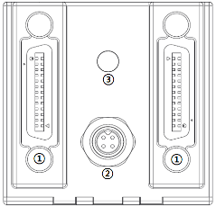
| No. | Name | Remark |
|---|---|---|
| 1 | CameraLink Connector | SDR26 |
| 2 | Power Connector | 4 Pin Circular Connector |
| 3 | LED indicator | LED |
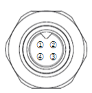
| No. | Name | IN/OUT | Description | Remark |
|---|---|---|---|---|
| 1 | Power IN | IN | 10.8V ~ 26.4V Input Range | |
| 2 | Power IN | IN | 10.8V ~ 26.4V Input Range | |
| 3 | GND | IN | Power GND | |
| 4 | GND+ | IN | Power GND |
| Light | Status |
|---|---|
| Orange | Camera initialization. |
| Green | Normal operation. |
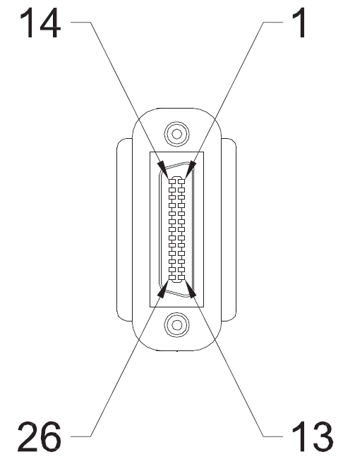
| PIN NO. | Signal Name | PIN NO. | Signal Name |
|---|---|---|---|
| 1 | GND | 14 | GND |
| 2 | X0- | 15 | X0+ |
| 3 | X1- | 16 | X1+ |
| 4 | X2- | 17 | X2+ |
| 5 | Xclk- | 18 | Xclk+ |
| 6 | X3- | 19 | X3+ |
| 7 | SerTC+ | 20 | SerTC- |
| 8 | SerTFG- | 21 | SerTFG+ |
| 9 | CC1- | 22 | CC1+ |
| 10 | CC2+ | 23 | CC2- |
| 11 | CC3- | 24 | CC3+ |
| 12 | CC4+ | 25 | CC4- |
| 13 | GND | 26 | GND |
| PIN NO. | Signal Name | PIN NO. | Signal Name |
|---|---|---|---|
| 1 | GND | 14 | GND |
| 2 | Y0- | 15 | Y0+ |
| 3 | Y1- | 16 | Y1+ |
| 4 | Y2- | 17 | Y2+ |
| 5 | Yclk- | 18 | Yclk+ |
| 6 | Y3- | 19 | Y3+ |
| 7 | 100ohm terminated | 20 | 100ohm terminated |
| 8 | Z0- | 21 | Z0+ |
| 9 | Z1- | 22 | Z1+ |
| 10 | Z2- | 23 | Z2+ |
| 11 | Zclk- | 24 | Zclk+ |
| 12 | Z3- | 25 | Z3+ |
| 13 | GND | 26 | GND |
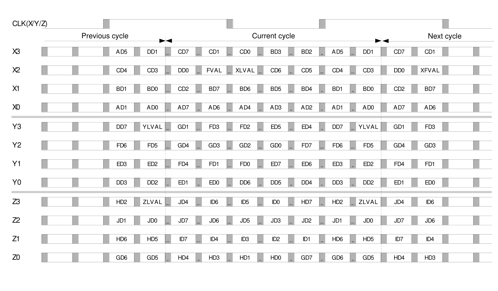
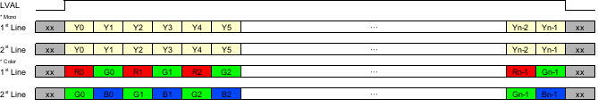
This feature changes the camera image output size and format settings.
| Item | Setting Value | Description |
|---|---|---|
| Width, Height, Offset X, Offset Y |
(Integer) | Changes the image output size and offset (pixel coordinates). WidthMAX >= Offset X + Width HeightMAX >= Offset Y + Height |
| ReverseX, ReverseY | True / False | Flips the image vertically or horizontally. |
| Pixel Format | Mono8/10 Bayer8/10 RGB8 Degree RGB8 Polarization |
Changes the format used when transferring images to the host. Refer to section 4.1.4 for the detailed transfer order. |
| Output Format Selector | Intensity(S0) AoP DoLP 0 Degree 45 Degree 90 Degree 135 Degree |
AoP: Outputs the average angle of light entering each pixel. DoLP: Outputs the degree of polarization as a brightness value. Intensity: Outputs the brightness of incident light. Degree: Outputs images for 0, 45, 90, and 135 degree angles. |
| Test Pattern | Off Vertical Ramp Horizontal Ramp |
Selects the test image. |
By setting Width, Height, Offset X, and Offset Y, only the desired image area can be output. The frame rate increases as the output image size becomes smaller.

Note
This feature flips the image horizontally or vertically.
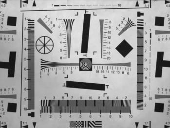
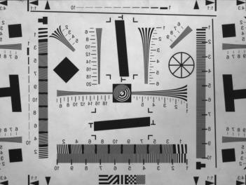
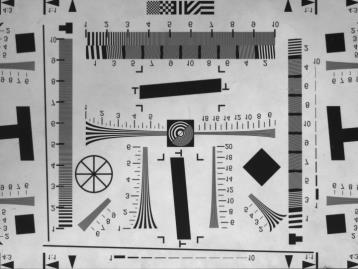
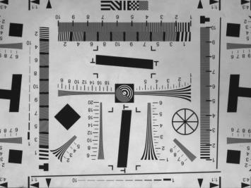
Precautions
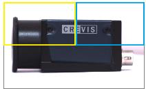
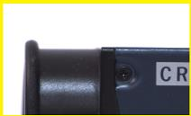
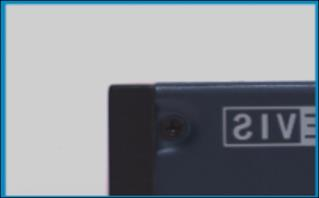
This feature changes the image pixel format. Because each pixel format transfers a different amount of image data, transfer speed and bandwidth can vary.
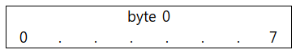
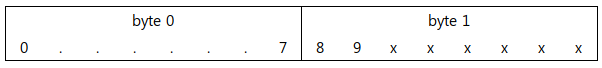
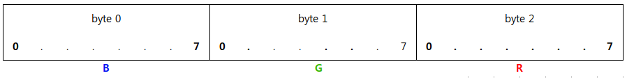
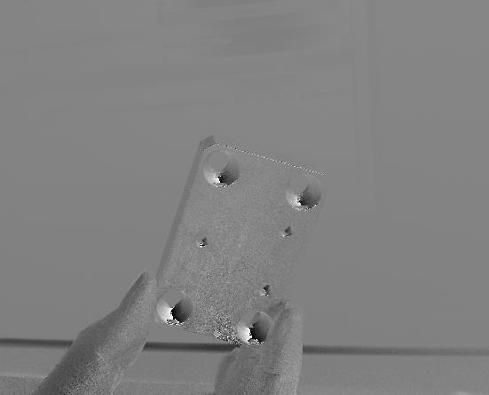
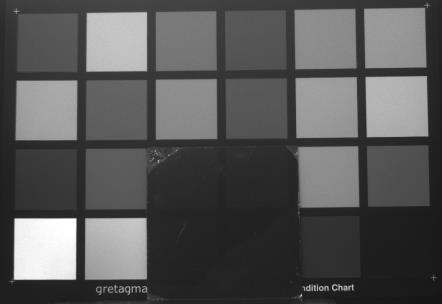
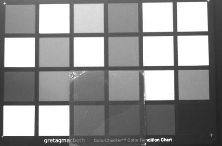
Included PDF range
The provided PDF includes content only up to the 4.1.5 Test Pattern heading, so no additional details were added after this item.
Tel : +82-31-899-4503 / 4504 / 4507
Fax : +82-31-899-4509
Tel : +82-31-899-4567
29-4, Gigok-ro, Giheung-gu, Yongin-si, Gyeonggi-do, Korea
| Version | Release Date | Description |
|---|---|---|
| 1.0 | 2020. 06. 30 | CameraLink Polarization Camera USER MANUAL |